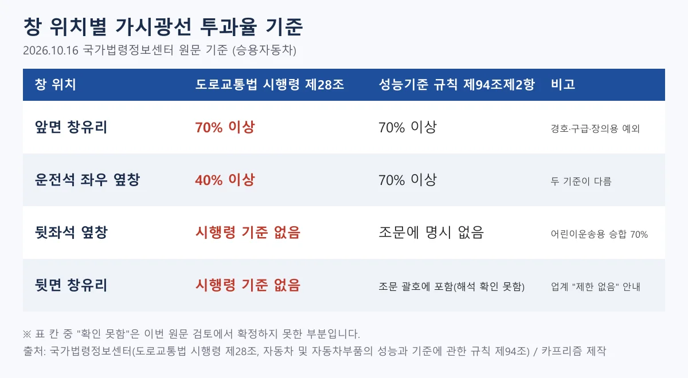
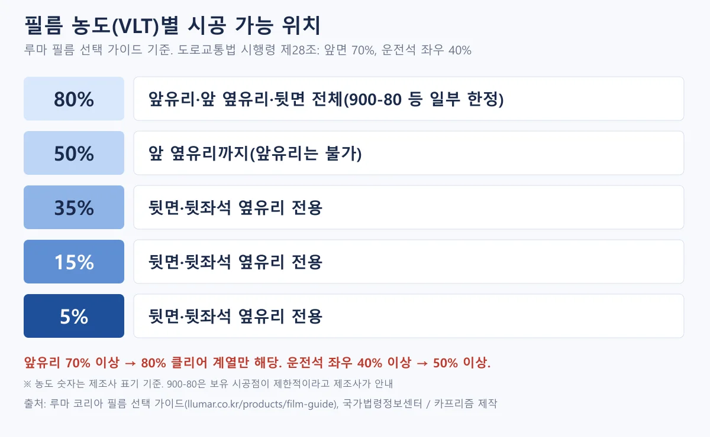
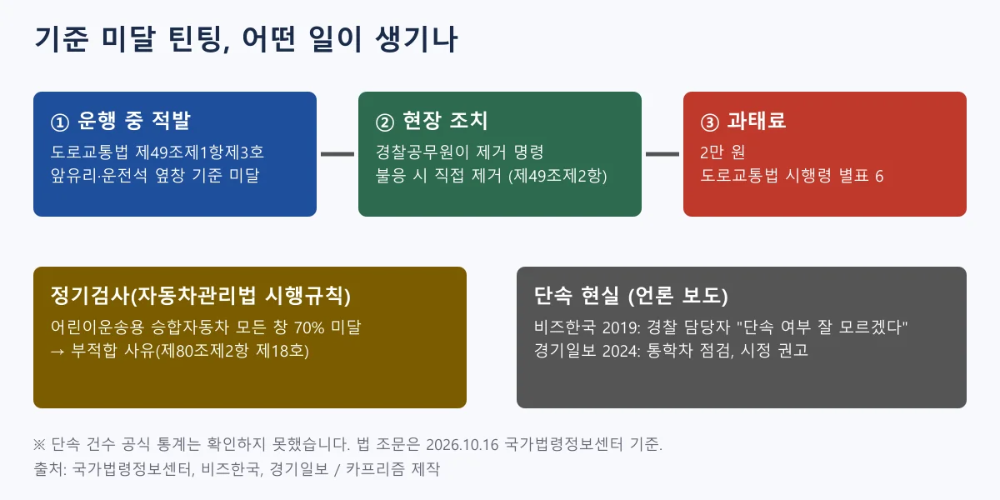
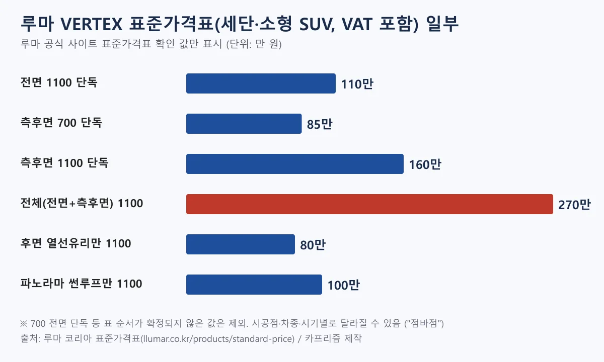
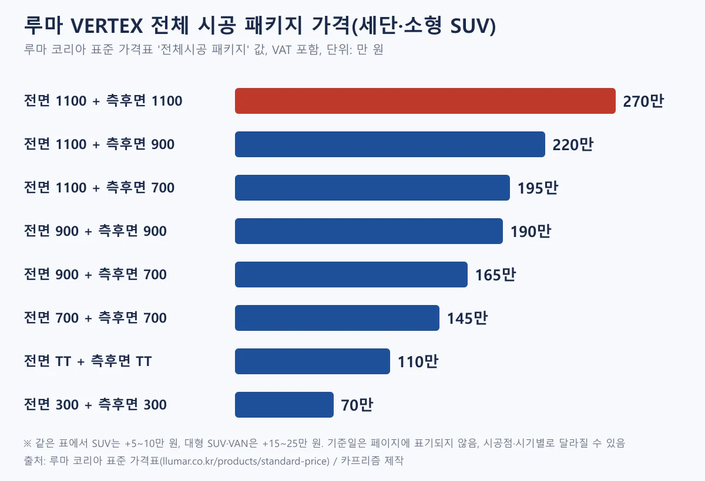
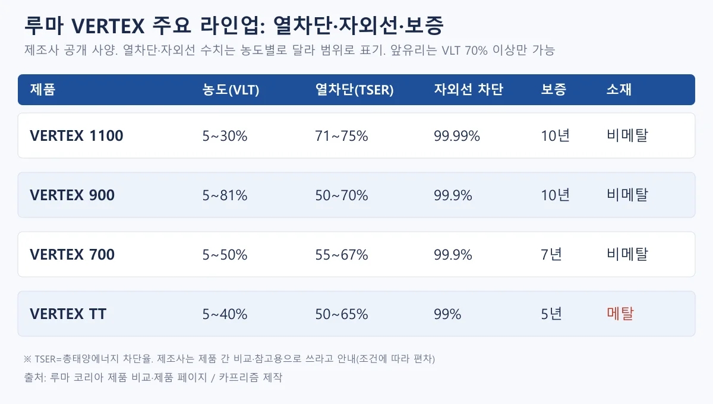
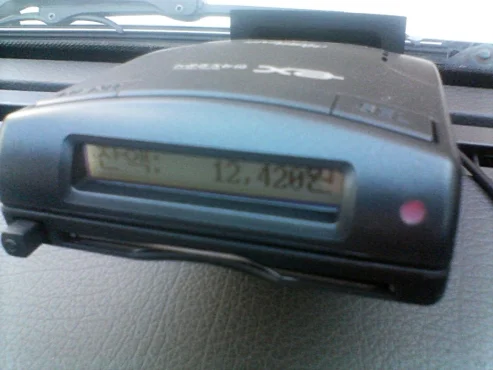
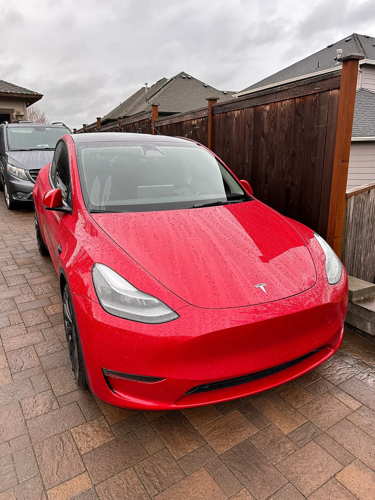
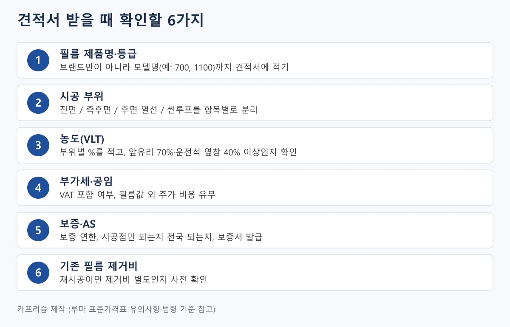

▲ 측면 창에 필름을 시공한 승용차 사진(미국 크라이슬러 컨버터블). 한국의 기준·가격과는 무관한 참고 사진 ⓒ Steevven1 / Wikimedia Commons (CC BY 2.5)
"썬팅, 진하게 해야 시원하다던데… 근데 너무 어두우면 걸리는 거 아닌가?" 새 차를 받거나 중고차를 사고 나면 누구나 이 고민에 한 번은 부딪힌다. 업체마다 견적은 제각각이라 어디서 얼마를 내야 적당한지 감이 안 오고, 어두울수록 시원하다는 말과 과태료 이야기가 동시에 들려오기 때문이다.
이 글에서는 세 가지를 풀어 준다. 첫째, 루마 공식 표준가격표로 본 앞유리·측후면·전체 시공 가격. 둘째, 앞유리 70%·운전석 옆창 40%라는 기준을 넘으면 실제로 어떻게 되는지.
셋째, 견적 받을 때 이것만 물어보면 덜 속는다는 체크리스트다. 법령은 2026년 10월 16일 국가법령정보센터 Open API로 원문을 직접 확인했고, 루마 가격은 공개 표준가격표를 1차로 삼았다.
그 밖의 가격은 2차 자료라 게시일을 함께 적었다. 투과율 기준과 판례가 먼저 궁금하다면 썬팅 투과율·판례 기사를 먼저 보고, 이 글은 견적 비교에 집중해서 읽으면 된다.
1. 앞유리 70%, 운전석 옆창 40% — 그런데 법령 기준이 두 개다
도로교통법 시행령 제28조는 앞면 창유리 70%, 운전석 좌우 옆면 창유리 40%를 기준으로 정한다. 도로교통법 제49조제1항제3호가 "앞면 창유리와 운전석 좌우 옆면 창유리의 가시광선 투과율이 대통령령으로 정하는 기준보다 낮아 교통안전 등에 지장을 줄 수 있는 차"를 운전하지 말라고 하고, 그 기준을 시행령 제28조가 숫자로 채운다. 요인 경호용·구급용·장의용 자동차는 법 본문에서 예외다. 도로교통법 시행령 바로가기
여기서 많은 글이 놓치는 부분이 있다. 자동차 및 자동차부품의 성능과 기준에 관한 규칙 제94조제2항은 앞면 창유리와 운전자좌석 좌우의 창유리 또는 창이 모두 가시광선 투과율 70% 이상이어야 한다고 적는다. 운전자의 시계범위 밖 차광을 위한 부분은 예외이고, 별표 12는 앞면 창유리의 시계범위에 해당하는 면이 70% 이상이어야 한다고 구체적으로 정한다(앞유리 상단의 짙은 띠가 이 예외와 관련된다).
어린이운송용 승합자동차는 제94조제3항에 따라 모든 창유리가 70% 이상이다. 이 규칙은 자동차의 구조·장치 안전기준이고, 도로교통법 시행령은 운전자의 운행 기준이다. 운행 중인 승용차에 두 기준이 어떻게 겹쳐 적용되는지에 대한 정부의 공식 해석은 이번에 확인하지 못했다.
한편 법 제49조제1항제3호의 예외는 요인 경호용·구급용·장의용 자동차뿐이며, 장애나 질환을 이유로 한 별도 예외 조항은 이번에 확인한 네 법령 원문에서 찾지 못했다. 성능기준 규칙 바로가기

▲ 창 위치별 기준 비교. 시행령 제28조와 성능기준 규칙 제94조제2항의 수치가 운전석 옆창에서 다르다 ⓒ 카프리즘 제작 도표(국가법령정보센터 원문 기준)
| 창 위치 | 도로교통법 시행령 제28조 | 성능기준 규칙 제94조 |
|---|---|---|
| 앞면 창유리 | 70% 이상 | 70% 이상(제2항) |
| 운전석 좌우 옆면 창유리 | 40% 이상 | 70% 이상(제2항) |
| 뒷좌석 옆창 | 기준 없음 | 제2항에 열거되지 않음 |
| 뒷면 창유리 | 기준 없음 | 제2항 괄호에 "승용자동차(컨버터블자동차 등 특수한 구조의 승용자동차를 포함한다)의 경우에는 뒷면창유리 또는 창을 포함"이라는 문구가 있으나 적용 해석은 확인하지 못함 |
| 어린이운송용 승합자동차 | — | 모든 창유리 70% 이상(제3항) |
📍 "50%" 필름이 어디까지 괜찮은가
시행령 기준만 놓고 보면 운전석 옆창은 40%까지, 앞유리는 70% 미만이면 기준 미달이다. 루마 코리아 필름 가이드도 앞유리 70% 이상, 앞 옆유리 40% 이상을 안내한다. 가이드의 농도별 설명은 80%가 앞유리·앞 옆유리·뒷면 전체, 50%는 앞 옆유리까지(앞유리는 기준 미달), 35%·15%·5%는 뒷면·뒷좌석 옆유리 전용이다.
다만 성능기준 규칙의 70% 문구까지 놓고 보면 운전석 옆창이 시행령 40%를 넘는지만으로 안심할 수는 없다. 루마 필름 선택 가이드 바로가기

▲ 필름 농도별 시공 가능 위치(루마 가이드 기준). 앞유리는 80% 계열만 해당한다 ⓒ 카프리즘 제작 도표(루마 코리아·국가법령정보센터 기준)
신차 출고 전 틴팅은 어떨까. 법령에는 신차 출고 전 시공에 대한 별도 조항이 없다. 오토뷰 칼럼 댓글에서 작성자 fox905는 신차 출고 때 딜러가 전면 30%·측면 15%를 기본처럼 권했다고 적었는데(2025.02.06, 한 명의 주장이다), 이 수치는 위 시행령 기준과 어긋난다. 출고 전 서비스 시공이라도 농도는 견적서·시공 확인서에 %로 남겨 두는 편이 안전하다.
2. 기준 미달이면 과태료 2만 원 — 그런데 단속은 얼마나 될까
도로교통법 시행령 별표 6은 제49조제1항제3호(창유리 가시광선 투과율 기준) 위반의 과태료를 2만 원으로 정한다. 근거 조문은 법 제160조제2항제1호(20만 원 이하 과태료)이다. 이 항목은 벌점이 아니라 과태료 항목이고, 시행규칙 벌점 표에서 이 행위는 찾지 못했다. 현장에서는 경찰공무원이 운전자에게 위반사항을 제거하게 하거나 필요한 조치를 명할 수 있고, 운전자가 따르지 않으면 직접 제거할 수 있다(법 제49조제2항).
경찰공무원이 직접 제거한 장치는 시행령 제30조에 따라 반환받을 때 제거·운반·보관 비용을 소유자나 운전자에게 징수할 수 있고, 제거일부터 6개월이 지나도 반환을 요구하지 않으면 매각해 대금을 보관할 수 있다. 도로교통법 바로가기
정기검사는 어떨까. 자동차관리법 시행규칙 제80조제2항은 정기검사에서 부적합 판정을 하는 사유를 번호별로 나열하는데, 창유리와 관련해서는 제10호(창유리의 규격품 미사용, 일부 탈락·구멍 등 심한 훼손)와 제18호(어린이운송용 승합자동차의 모든 창유리 또는 창의 가시광선 투과율 미달)가 있다. 검사기준 별표 15에서도 같은 내용이 어린이운송용 승합자동차에 한해 확인된다.
승용차의 앞유리·운전석 옆창 투과율은 이 부적합 사유 목록에서 찾지 못했다. 자동차관리법 시행규칙 바로가기

▲ 적발에서 과태료까지의 흐름과 정기검사 사유, 보도로 본 단속 현실 ⓒ 카프리즘 제작 도표(국가법령정보센터·언론 보도 기준)
단속 실적 통계는 이번에 확인하지 못했다. 공개 보도로 알 수 있는 것은 다음과 같다.
- YTN 라디오(2016.08.03): 광주 어린이 통학버스 방치 사고 후 방송에서 삼성교통안전문화연구소 연구원은 사고 차량의 앞유리 투과율을 79.8%, 운전석 옆유리를 11.8%로 설명했다. 과태료는 2만 원이며 연구원은 "90% 이상의 차량이 기준을 위반하고 있다"고 봤다(출연자 견해, 근거 통계는 방송에서 제시되지 않았다). YTN 기사 바로가기
- 비즈한국(2019.03.05): 경찰청 교통안전과 담당자가 단속 여부를 묻는 질문에 "이 부서에 온 지 얼마 되지 않아 단속 여부에 대해서는 잘 모르겠다"고 답했다고 보도했다. 기사는 조항이 사실상 지켜지지 않는다고 평가했다. 비즈한국 기사 바로가기
- 경기일보(2024.03.12): 어린이 통학 차량 투과율 합동점검에서 위반이 적발되면 경기도 관계자 설명으로는 현재 시정 권고 조치만 하고 있다고 보도했다. 적발 건수는 기사에 나오지 않는다. 경기일보 기사 바로가기
정리하면 법적 제재 수준은 낮고 상시 단속 통계는 공개 자료로 확인하지 못했다. 그렇다고 어두운 필름이 안전하다는 뜻은 아니다. 2016년 방송에서 연구원은 투과율이 60% 이하로 떨어지면 거리 감각이 크게 떨어지고 짙은 선팅이 급제동 반응시간을 30% 이상 늦췄다고 설명했다(연구소 실험 결과를 방송에서 소개한 것이며 논문은 확인하지 못했다).
3. 가격 — 루마 공식 표는 세단 기준 전면 110만 원, 전체 270만 원까지
루마 코리아가 공개한 VERTEX 표준가격표는 부가세 포함이며 국산·수입 구분 없이 세단·소형 SUV, 중형 SUV, 대형 SUV·VAN으로 나뉜다. 아래는 이 표의 주요 행을 옮긴 것이다(2026.10.16 재확인, 전면·측후면·전체 시공 열과 합계가 서로 맞는 것을 확인했다). 기준일은 페이지에 적혀 있지 않았다.
전체 시공 패키지 표에서 가장 비싼 조합은 대형 SUV·VAN의 1100+1100 295만 원이고, 파노라마 썬루프와 후면 열선 시공은 별도다. 루마 표준가격표 바로가기
| 시공 부위 | 세단·소형 SUV | SUV | 대형 SUV·VAN |
|---|---|---|---|
| 전면유리 단독 1100 | 110 | 110 | 115 |
| 전면유리 단독 900 / 700 / TT | 80 / 60 / 45 (세단·SUV 공통) | 85 / 65 / 50 | |
| 측후면 단독 700 | 85 | 90 | 95 |
| 측후면 단독 900 | 110 | 115 | 120 |
| 측후면 단독 1100 | 160 | 170 | 180 |
| 전체 시공(전면+측후면) 1100 | 270 | 280 | 295 |
| 전체 시공 900+900 / 700+700 | 190 / 145 | 195 / 150 | 205 / 160 |
| 후면 열선유리 단독 1100 | 80 | ||
| 파노라마 썬루프 단독 1100 | 100 | ||
| 기존 필름 제거(전면 / 후면 열선 / 측면 1장 / 측후면 전체) | 4 / 7 / 2 / 9 (차종 구분 없이 표기된 값) | ||

▲ 루마 공식 표준가격표 확인 값. 전체 시공 1100은 전면 110만 원과 측후면 160만 원의 합 270만 원 ⓒ 카프리즘 제작 도표(루마 코리아 표준가격표 기준)
패키지 가격은 등급 조합으로 갈린다. 같은 세단·소형 SUV에서 전면 1100+측후면 700은 195만 원, 전면 900+측후면 900은 190만 원, 전면·측후면 모두 TT는 110만 원, 모두 300이면 70만 원이다. 다만 아래 "1100 전면" 문제를 먼저 읽어 두자.

▲ 루마 표준가격표의 전체 시공 패키지 8개 조합(세단·소형 SUV, VAT 포함) ⓒ 카프리즘 제작 도표(루마 코리아 표준가격표 기준)
📍 "전면 1100"은 앞유리에 쓸 수 있는 농도일까
루마 VERTEX 1100 제품 페이지는 모델을 1100-05·1100-15·1100-30(가시광선 투과율 5·15·30%)으로 안내하고, 제품 비교표도 1100의 투과율을 5~30%로 적는다. 같은 비교표는 "전면 유리는 도로교통법상 가시광선 투과율 70% 이상 제품만 시공 가능"이라고 적는다. 그런데 표준가격표에는 "전면유리 1100"이 있다.
가격표의 전면 1100이 어떤 농도 제품인지 공식 페이지에서는 확인하지 못했다. 앞유리 시공을 생각한다면 견적서에 농도를 %로 적고, 제조사가 앞유리용으로 안내하는 80% 계열(예: VERTEX 900-80, 제조사는 보유 시공점이 제한적이라고 안내)인지 시공점에 직접 묻는 것이 맞다.
필름 등급은 가격만이 아니라 보증과 열차단 표기에서도 갈린다. 루마 필름 가이드는 VERTEX 1100·900 보증 10년, 700·MK 7년, TT 5년으로 안내하고 열차단 수치(TSER)를 1100은 71~75%, 900은 50~70%, 700은 55~67%로 적는다. 표준가격표에는 "세라믹"이라는 표기가 없지만, 루마 제품 목록은 VERTEX 900·700을 "NANO CERAMIC"으로, 700의 기술 설명은 "NAC 나노 세라믹"으로 표기한다.
이 분류를 따르면 세단·소형 SUV 기준 전체 시공은 900+900이 190만 원, 700+700이 145만 원이다. 시공 하자 AS는 3개월이며 최초 시공점에서만 받을 수 있다고 표 유의사항에 적혀 있다. 3M·솔라가드 등 다른 브랜드의 제조사 공식 가격·등급표는 이번에 확인하지 못했다(3M 한국 사이트는 접속되지 않았다).
| 구분 | 제품 예 | 전면+측후면 합계 | 출처 |
|---|---|---|---|
| 보급형 | 3M EX 계열(국산차) | 약 29만 원(전면 14 + 측후면 15) | 주차몽 2024.03.27 |
| 보급형 | 레이노 PRESTO R1 | 약 41만 원(18 + 23) | 주차몽 2024.03.27 |
| 중급 | 레이노 PRESTO R2 | 약 62만 원(27 + 35) | 주차몽 2024.03.27 |
| 중급 | 3M CP 계열(국산차) | 약 70만 원(31 + 39) | 주차몽 2024.03.27 |
| 프리미엄 | 레이노 PRESTO D1 | 약 99만 원(41 + 58) | 주차몽 2024.03.27 |
| 프리미엄 | 루마 VERTEX 1100 | 270만 원(공식 표) | 루마 코리아 |
이 표의 보급형·중급·프리미엄 구분은 카프리즘이 가격대로 임의로 묶은 것이다. 주차몽 표(2024.03.27 게시, 원문과 수치가 일치함을 확인했다)는 가격 출처를 밝히지 않았고 현재 가격과 다를 수 있다. 표의 3M 전면 EX50·CP50 같은 모델명 숫자가 가시광선 투과율을 뜻하는지는 3M 공식 자료로 확인하지 못했고, 앞유리 70% 이상 제품인지도 알 수 없다.
주차몽 가격표 바로가기 제품 계열명이 세라믹인지도 확인하지 못했다. 숨고 블로그의 "세라믹 35만~70만 원, 나노세라믹 50만~100만 원" 같은 범위는 글 말미에 생성형 AI 제작 표기가 있고 수치 출처가 없어 사용하지 않았다.
📍 차급별 차이는 이렇게 읽는다
루마 표준가격표에서 세단·소형 SUV 대비 SUV는 측후면 700 기준 5만 원, 1100 기준 10만 원 높고, 대형 SUV·VAN은 각각 10만 원, 20만 원 높다. 전체 시공 1100은 270만 원에서 280만 원, 295만 원으로 올라간다.
즉 차급 차이는 "필름 등급 차이"보다 작고, 같은 차에서 어떤 등급을 고르느냐가 훨씬 큰 변수다. 시공점이 받는 공임·프로모션은 공개 자료에 없어 "점바점"으로 남는다.
4. 필름 종류와 열차단 수치 — 제조사 공식 자료로 읽는 법
열차단 필름의 소재는 크게 금속 입자를 쓰는 메탈 계열과 쓰지 않는 비메탈(나노 세라믹 포함) 계열로 나뉜다. 루마 코리아 자료로 보면 VERTEX 1100·900·700은 비메탈, MK/MK2와 TT는 메탈(스퍼터드 메탈)이다.
제조사는 비메탈 제품이 GPS·라디오·RF 수신 장치와 호환된다는 점을 강조하고, TT는 은은한 반사광이 나는 스타일 특화 필름으로 소개한다. 염료·카본 필름의 특성은 제조사 공식 자료로 확인하지 못해 이 글에서는 다루지 않았다.

▲ 루마 VERTEX 주요 제품의 공개 사양 비교(제품 페이지·제품 비교표 기준) ⓒ 카프리즘 제작 도표(루마 코리아 공개 사양 기준)
- 열차단은 TSER로 읽는다: 루마는 열 차단을 총태양에너지 차단율(TSER)로 표기한다. VERTEX 1100은 71~75%, 900은 50~70%, 700은 55~67%, TT는 50~65%다. 1100은 별도로 "적외선(IR) 차단 90% 이상"을 내세우는데, IR 차단율과 TSER은 서로 다른 지표라 한 표에 섞어 비교하면 안 된다.
- 자외선 차단: 제조사 표기는 1100이 99.99%, 900·700이 99.9%, TT가 99%다.
- 수치의 한계: 제품 페이지는 이 수치가 공인 시험기관의 특정 조건 값이며, 차량 유리 물성·시공 환경·기후에 따라 달라지므로 "절대적 기준이 아니라 제품 간 비교·참고용"으로 쓰라고 안내한다. 앞유리는 70% 이상이어야 하므로 이 범위 안에서 비교해야 한다.
- 열차단 효과에 대한 다른 시각: YTN 방송(2016)에서 연구원은 앞유리를 70% 기준 아래로 짙게 해도 추가 효과가 크지 않고, 80% 미만부터는 단열 효과가 그리 크지 않다고 말했다(출연자 견해). 앞유리에는 투명 열차단 필름을 찾으라는 오토뷰 칼럼 의견과 같은 방향이다.
- 하이패스: 루마는 900 제품에 대해 RF형 하이패스를 권장하고 IR 방식은 적외선 차단으로 수신 장애가 있다고 안내한다. 700은 IR·RF 모두 호환이라고 적는다. 앞유리에 필름을 시공한다면 단말기 방식을 시공점에 알려야 한다.

▲ 대시보드에 놓인 하이패스 차량 단말기(구형 표시창 모델). 필름 종류에 따라 수신이 달라질 수 있다 ⓒ iTurtle / Wikimedia Commons (CC BY 3.0)
5. 공개 후기는 갈린다 — 만족과 반대 의견
아래는 오토뷰 게시판에 공개된 글을 요약한 것이다. 작성자 표기와 날짜를 함께 적었고, 직접 겪은 경험담이 아니라 공개 글의 요약과 편집자 해석이다.
- 긍정: 오토뷰 Q&A(2026.06.22) 작성자 shou864는 전면 50%, 1열 측면 50%, 2열 측면 35%, 후면 50% 사양이 주야간 모두 딱히 불편함이 없다고 적고, 전면을 80%로 올릴지 고민한다고 썼다(댓글은 확인 당시 없었다). 오토뷰 Q&A 바로가기
- 조건부 지지: 아래 오토뷰 칼럼에 달린 2025.02.06 댓글에서 fox905는 신차 출고 때 딜러가 전면 30%·측면 15%를 기본으로 권했고, 모두 50%로 요청하자 처음엔 50%는 없다고 하다 추가금을 받고 시공해 줬다고 썼다. 또 필름 없는 차를 며칠 타 보니 고통스러웠다며 "50%는 있어야 한다"고 했다(전면 포함 전 창 50%를 말한 것으로 읽힌다).
- 부정·반대: 오토뷰 운영자 칼럼(2025.01.22)은 짙은 틴팅이 뒷좌석 아이 확인과 사고 시 구조를 어렵게 하고, 야간·우천 시 측면 시야와 디스플레이 반사 문제가 있다고 지적했다. 칼럼은 전면은 하지 않는 것이 맞고(정 하고 싶다면 투명 열차단 필름을 찾는 것이 좋다) 측후면도 50% 정도가 최대치라는 의견이다(운영자 개인 의견). 오토뷰 칼럼 바로가기
편집자 해석: 위 shou864의 전면 50%는 시행령 기준(앞면 창유리 70%)보다 낮아 보인다. "불편하지 않다"는 체감과 법적 기준 충족 여부는 별개다.
반대로 "전면은 안 하는 게 맞다"는 의견은 법 기준과 같은 방향이다. 단, 이 후기들은 표본이 작고 제품·시공점 정보가 없어 시공 품질 평가로 쓰기는 어렵다.

▲ 세라믹 필름을 시공했다고 설명된 미국 차량 사례. 업로더는 앞유리에 투명 70% 필름을 썼다고 적었다(한국 시공 사례가 아니며 가격과 무관) ⓒ Dimosca / Wikimedia Commons (CC BY-SA 4.0)
6. 견적 체크리스트, 시공 후 관리와 무료 견적 비교법
견적은 "얼마"보다 "무엇을 포함했는지"를 먼저 적는다. 루마 표준가격표가 시공 부위·차종·등급·VAT·제거비·AS 조건을 따로 적는 구조라는 점을 기준 삼아, 견적서 항목을 같은 틀로 맞춰 두면 업체 간 비교가 쉬워진다.

▲ 견적서 확인 항목 6가지 ⓒ 카프리즘 제작 도표
✅ 실행 순서
1. 같은 조건표 만들기: 차종, 시공 부위(전면/측후면/후면 열선/썬루프), 희망 등급을 정한다
2. 시공점 3곳 이상에 같은 조건으로 문의해 견적서를 받는다(루마 코리아는 시공점 찾기와 정품 확인·보증서 조회 메뉴를 운영한다)
3. 부위별 농도(VLT)를 견적서에 % 단위로 적고, 앞유리 70% 이상·운전석 옆창 40% 이상(시행령)이 되는지 확인한다
4. 재시공이면 기존 필름 제거비를 별도 문의한다(루마 표준가격표의 측후면 전체 제거비는 9만 원)
5. 보증서와 제품 정품 여부, 보증 범위가 시공점 한정인지 확인한 뒤 계약한다
시공 후 관리는 보증·AS 조건과 직결된다. 루마 코리아 관리 안내는 시공 직후 3일을 안정화 기간으로 보고 다음을 요구한다. 시공 후 최소 3일간 창문을 내리지 않고, 세척을 피하며, 이후에도 희석한 샴푸물과 부드러운 극세사 천으로만 닦고(연마재·스크레이퍼·유리세정제·물티슈 금지), 안전띠 버클과 접착테이프·흡착식 용품에 필름이 손상되지 않게 하고, 고온 도장부스·고압 에어건을 피한다. 겨울철에는 유리가 언 상태에서 창을 내리면 필름이 몰딩 하단에서 벗겨질 수 있으니 히터로 녹인 뒤 창을 쓰라고 한다.
고객 부주의로 생긴 이상은 AS 대상이 아니고, 결빙 상태에서 창을 작동하다 필름이 떨어지면 시공비가 발생할 수 있다고 적는다. 여름·겨울 체감 차이를 비교한 공식 시험 자료는 확인하지 못했다.
"무료 견적"은 시공점이 방문·전화로 제공하는 경우가 일반적이지만, 모든 업체가 같은 정책인지는 확인하지 못했다. 가격이 크게 낮은 견적은 제품 등급이나 시공 범위가 다를 수 있으니 항목을 하나씩 맞춰 본 뒤 비교하는 것이 안전하다. 필름 투과율 선택과 그 결과에 대한 책임은 고객에게 있다고 루마 표준가격표 유의사항에도 적혀 있다.
같이 보면 좋은 기사: 자동차 썬팅, 어디까지 가능할까 · 합법 튜닝 가이드 · 정기검사와 종합검사 차이 · 전기차 여름철 주행거리 팁
7. 요약
기준은 앞유리 70%, 운전석 옆창 40%(도로교통법 시행령 제28조)이고, 성능기준 규칙 제94조제2항은 운전석 옆창도 70%로 적는다. 기준 미달의 과태료는 시행령 별표 6 기준 2만 원이며 경찰은 현장 제거를 명령할 수 있다. 정기검사 부적합 사유로 확인된 투과율 항목은 어린이운송용 승합자동차 모든 창 70%다. 상시 단속 통계는 확인하지 못했다.
가격은 등급 차이가 가장 크다. 루마 공식 표준가격표(VAT 포함, 세단·소형 SUV)는 전면 1100 110만 원, 측후면 1100 160만 원, 전체 1100 270만 원이다. 2024년 블로그 자료 기준 저가대는 3M 국산차 EX 약 29만 원, 레이노 R1 약 41만 원이다. 루마 제품 페이지는 VERTEX 1100의 농도를 5~30%로만 안내해 가격표의 "전면 1100"이 앞유리용인지 확인하지 못했고, 3M·솔라가드 공식 가격표와 현재 시공점 평균가도 확인하지 못했다. 결국 시공점·차종·시기에 따라 달라진다. 같은 조건표로 3곳 이상 견적을 받아 비교하자.